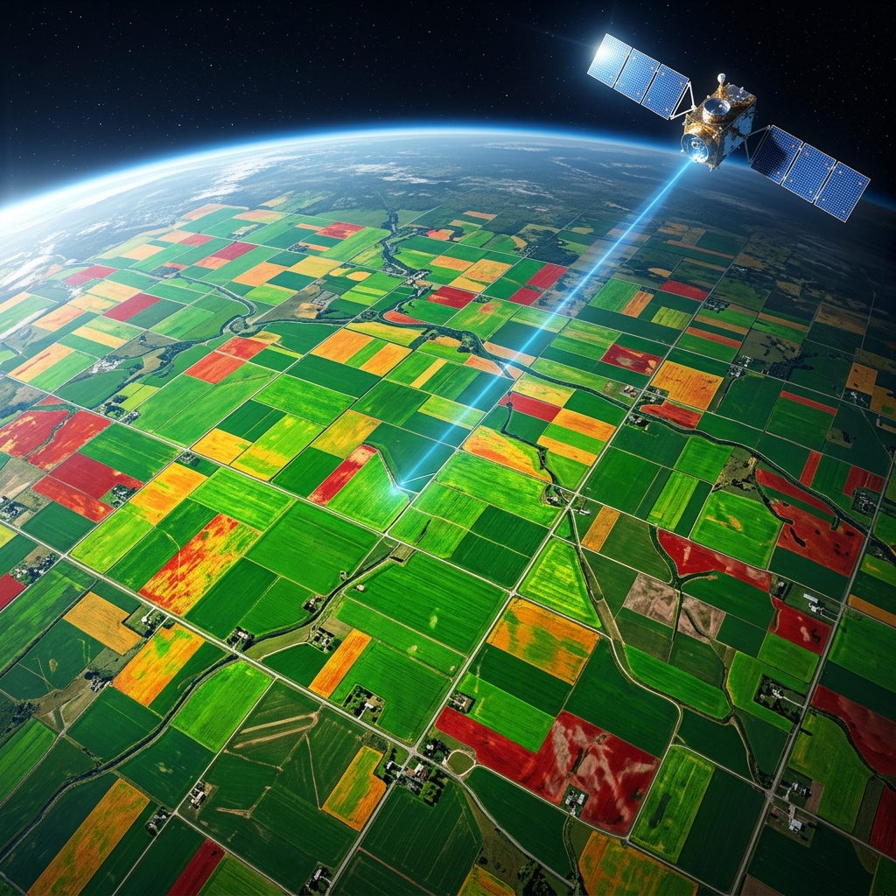

We detect risks early and show exactly where to act. Get your field analyzed in 48h with our high-resolution satellite intelligence.
Get a complete analysis for one field absolutely free. See the risks before they affect your harvest.

At RisqueVert, we bridge the gap between advanced aerospace technology and hands-on agriculture. Our mission is to transform complex satellite data into beautifully simple, actionable insights that empower farmers to make decisions with absolute confidence.
We transform complex scientific data into simple, actionable field insights.
Every day without satellite intelligence is a day of invisible risk.
By the time you see crop stress with your own eyes, the damage to your yield is already done. You lose revenue you never knew you were losing.
Leaking pivots, clogged lines and uneven pressure zones create massive wet or dry patches — completely invisible from the ground level.
Uniform fertilizer and chemical applications overspend on healthy zones and under-treat critical stress areas, burning your budget with no return.
Choose the level of intelligence that fits your farm's needs.
Continuous bi-weekly vegetation health tracking to establish a baseline for your crops and spot growth anomalies instantly.
Proactive AI alerts for pest infestations, disease outbreaks, and severe weather impact zones before they spread.
Deep-dive moisture index mapping to detect underwatering, pivot leaks, and drainage issues saving precious water resources.
Track carbon performance, soil erosion risk, and long-term ecological impact to ensure your land remains fertile for generations.
Advanced chlorophyll tracking and variable rate seeding (VRS) prescriptions to maximize output exactly where it counts.
The ultimate all-in-one suite. Get every layer, every alert, and dedicated agronomist support to manage your entire operation from space.
We capture multi-spectral data of your field at 10m resolution.
Our algorithms instantly analyze the data for anomalies and stress.
The field is divided into clear action zones.
You receive a simple, actionable report within 48 hours.
Fill out this simple form to claim your free 48h satellite analysis for one field.
We are a passionate team of agronomists, data scientists, and engineers on a mission to make agriculture smarter. We believe the best talent should be connected to the most impactful problems.
While there are no open roles at this moment, we are always growing and love connecting with exceptional people early.
📣 Follow us on LinkedIn to be the first to know when new positions open up.